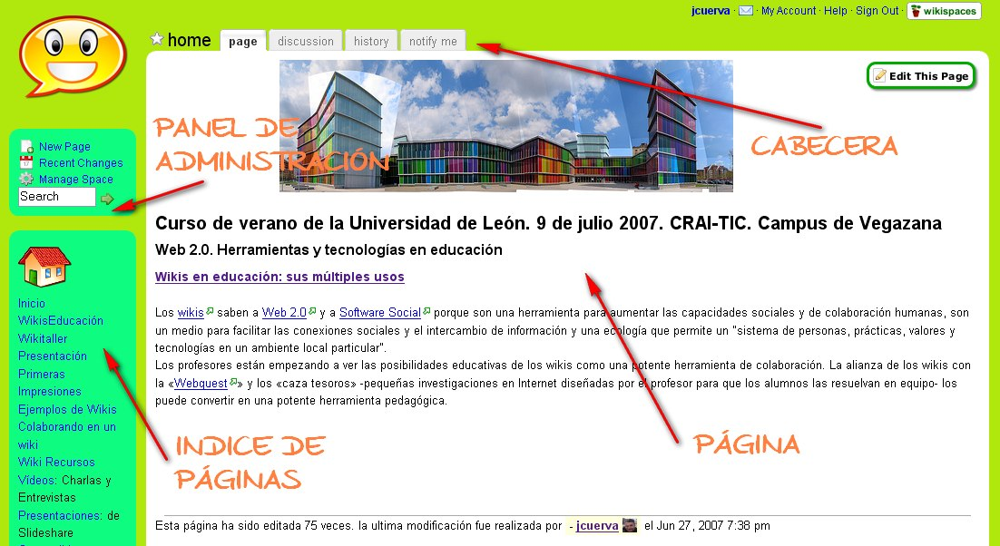

Actividad
Un wiki o una wiki es un sitio web cuyo contenido puede ser editado por
otros usuarios que pueden crear, modificar o borrar el contenido que comparten.
La aplicación más importante hasta el momento de las wikis ha sido la creación de enciclopedias colaborativas, aunque también se utilizan para la puesta en común de conocimientos en grupos cerrados o en la coordinación de acciones de una actividad concreta.
|
Ventajas
Es mucho más sencilla y fácil de usar que una base de datos. La rapidez de actualización de contenidos. Utiliza una tecnología sencilla basada en wikitextos.
|
|
|
|
Inconvenientes
La facilidad para borrar contenidos, introducir errores, agregar contenido inapropiado u ofensivo o incumplir las normas del wiki. Este problema se ha resuelto en la mayoría de los wikis mediante la creación de un historial de cambios que permite recuperar el estado anterior e identificar al autor de éstos. |
|  |
|
Img 14. Elementos de una página wiki Imagen obtenida de aula3c bajo licencia Creative Commons |
Para finalizar estos dos apartados, te proponemos el juego de las diferencias. A continuación, te damos una lista de características y tú debes decidir cuáles pertenecen a un BLOG y cuáles a una página WIKI.
Una vez completado el ejercicio, organiza la información en una tabla que además, te servirá para estudiar los contenidos de esta parte del tema.